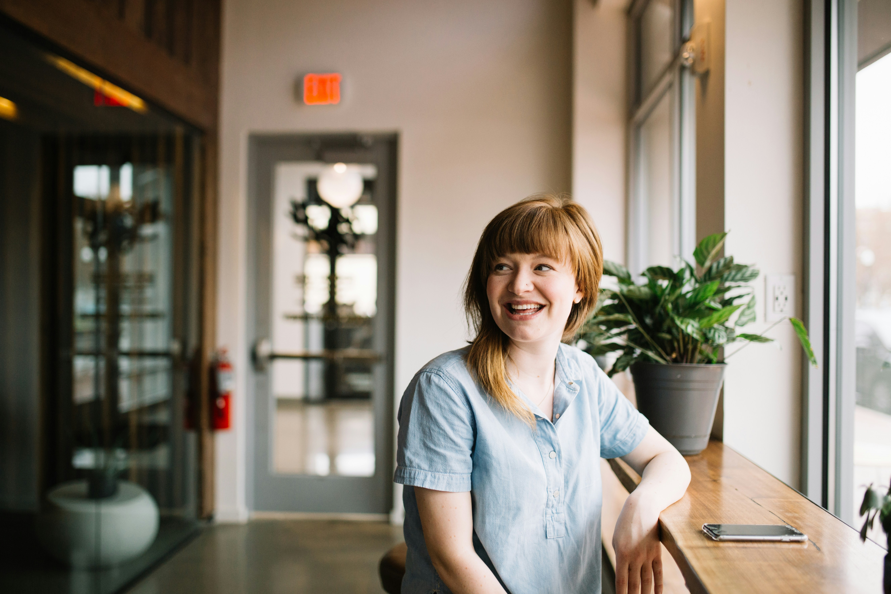

Club Rafting Company
Our Mission

At Club Rafting Company, our mission is to deliver unforgettable, safe, and eco-friendly rafting adventures that connect individuals with nature and each other. We are dedicated to preserving the natural beauty of our rivers, promoting environmental stewardship, and fostering a spirit of adventure and camaraderie. Through our commitment to excellence in service, safety, and sustainability, we aim to inspire a lifelong passion for the great outdoors in every adventurer we guide.
History
In the summer of 2024, Paul Junior Dole, a passionate adventurer with a love for white-water rafting, decided to turn his dream into reality. Growing up in the mountainous town of Rapidsville, Paul spent his childhood exploring the rushing rivers and developing a deep respect for nature's power and beauty.
After years of guiding rafting tours for other companies, Paul knew it was time to start his own business. With a modest savings and unwavering determination, he founded "Wild Rapids Rafting Co." He chose the Thunder River, a challenging and picturesque river, as the mainstay of his operations. Known for its thrilling rapids and serene stretches, the Thunder River promised an exhilarating yet safe experience for all.
Paul's vision for Club Rafting Co. was clear: to provide unforgettable adventures while promoting environmental stewardship. He invested in eco-friendly rafts and equipment, ensuring that his business left minimal impact on the pristine wilderness.
With his background in guiding, Paul trained his small team of guides extensively, emphasizing safety and customer experience. The first summer was tough; every day was a blend of hard work and learning, but Paul's passion kept him going. Word of mouth spread quickly about the thrilling adventures and Paul's deep knowledge of the river.
By the end of their inaugural season, Club Rafting Co. had gained a loyal following. Locals and tourists alike were drawn to Paul's charismatic leadership and the company's commitment to sustainability. The success allowed Paul to expand his fleet and hire more guides, each one as dedicated as he was to providing exceptional experiences.
Rapidsville embraced Paul's company, recognizing the positive impact it had on tourism and the local economy. As he looked ahead, Paul remained committed to his founding principles: sharing his love for adventure, protecting the environment, and creating lifelong memories for his guests.
Paul's dream had become a reality, and Wild Rapids Rafting Co. was poised to ride the waves of success for many years to come.